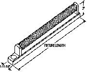
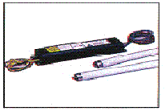
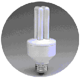
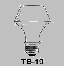

| Lighting Equipment - Type and Characteristics
of Equipment |
Emits |
Found In |
Incandescent
- Produces light by electrically heating a tungsten filament
- Includes energy-efficient incandescent bulbs, such as Reflector or
R-Lamps (accent and task lighting), Parabolic Aluminized Reflector (PAR)
lamps (flood and spot lighting), and Ellipsoidal Reflector (ER) lamps
(recessed lighting)
- Highly inefficient because much of the energy is lost as heat
|
14-18 Lumens Per Watt (LPW) |
14% of Lit Commercial Floorspace |
| Standard Fluorescent Lighting with Magnetic Ballast

- Produces light by passing electricity through mercury vapor, causing
the fluorescent coating to glow or fluoresce
- Includes U-shaped and circular tubes
- Four times more efficient, consumes 75-85 percent less electricity,
and lasts 10 times longer than incandescent
- Ballast starts and operates the fluorescent light
- Magnetic ballast is somewhat inefficient because of heat loss
|
60-67 LPW |
77% of Lit Commercial Floorspace |
Standard Fluorescent with Electronic Ballast

- Electronic ballast operates lights using electronic switching power
supply circuits and operates at cooler temperatures, weighs less, and
is quieter than the magnetic ballasts
- Directly interchangeable with magnetic ballast
- Most common electronic ballast operates T-8 lamp
- More efficient and lasts longer than magnetic ballast
|
82-90 LPW |
| Compact Fluorescent 
- Produces light in the same way as the standard fluorescent
- Includes a round adapter allowing replacement of incandescent
- Has either electronic or magnetic ballast
- Lasts 10 to 15 times longer than incandescent
|
105 LPW |
3% of Lit Commercial Floorspace |
| High-Intensity Discharge (HID)
- Produces light by passing electricity through gas, which causes the
gas to glow
- Examples are mercury vapor lamps, metal halide lamps, and high- and
low-pressure sodium lamps.
- Has an extremely long life and emits many more lumens per fixture
than fluorescent
- Ballast starts and operates the HID light
|
50-140 LPW |
8% of Lit Commercial Floorspace |
| Halogen 
- Produces light using a halogen gas, usually iodine or bromine, thatcauses
the evaporating tungsten to be redeposited on the filament, thus prolonging
its life
- A newer type of incandescent often used in desk and reading lamps
- Lasts up to four times longer and more efficient than incandescent
|
15-22 LPW |
2% of Lit Commercial Floorspace |
Source: Energy Information Administration, Forms EIA-871A through F of the 1995 Commercial Buildings Energy Consumption Survey.